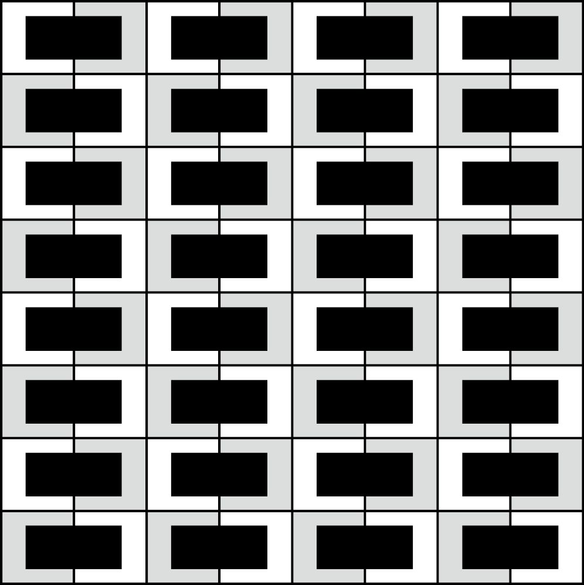
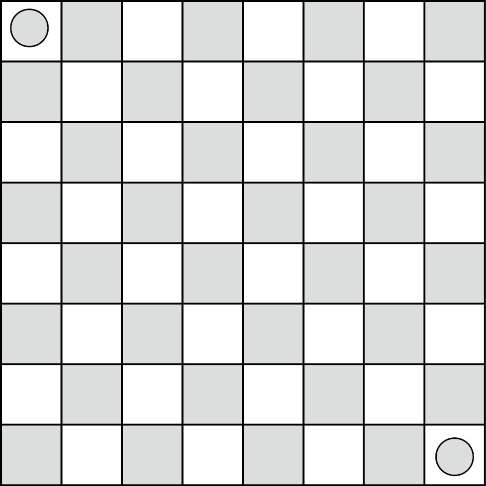
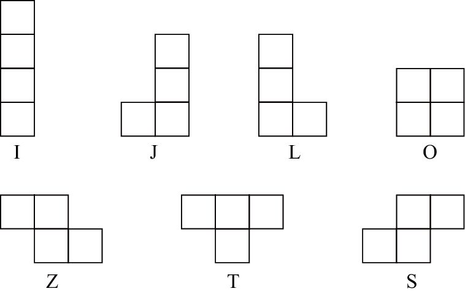
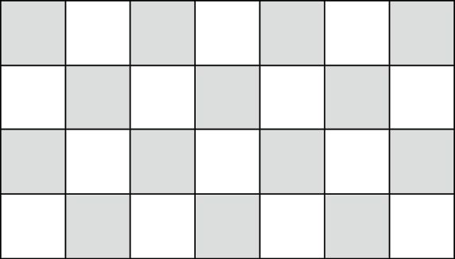

）。
）。数学的一大乐趣，也是数学不同于其他科学的显著标志，就是它可以通过证明的方式帮助我们拨云见日，消除疑虑。在其他科学领域，我们之所以接受某些法则，是因为这些法则与现实世界一致，但一旦有新的证据出现，这些法则就有可能被推翻或者修改。在数学领域，如果某个命题被证明为真，那么它将永远是真实的。例如，欧几里得早在两千多年前就证明了质数有无数个，对于这个命题的真实性，我们无须怀疑。技术诞生之后还会退出历史舞台，但数学定理亘古不变。伟大的数学家高德菲·哈罗德·哈代（G. H. Hardy）说过：“同画家和诗人一样，数学家也是规律的创造者。数学家创造的规律之所以更加持久，原因就在于这些规律中蕴藏着思想。”我常常想，要想在学术方面取得不朽的成绩，最好的办法就是证明一条新的数学定理。
数学家不仅可以证明某些事情的确定性，还可以证明某些事情是不可能的。人们有时说：“你无法证伪。”这句话的意思是，你无法证明紫色奶牛不存在，因为说不定哪天就会出现一头这样的奶牛。但在数学领域，你可以证伪。例如，无论你怎么努力，都找不到和为奇数的两个偶数，也找不到比其他质数都大的质数。第一次接触时，证明可能会让我们望而生畏（也许第二次、第三次时我们还会感到害怕），需要不断练习才能逐渐适应。但是，一旦你精于此道，就会觉得其乐无穷，无论是你自己动手证明，还是看别人的证明过程。好的证明就像一个精彩的故事，让你满心愉悦[shu籍 分.享 V信jnztxy]。
接下来，我和大家分享我第一次证明某件事是不可能的经历。小时候，我喜欢玩游戏、做智力测试题。一天，一位朋友给我出了一道难题，让我兴致盎然。他拿出一个空的8×8棋盘和32个普通的1×2双方块，然后问我：“你可以用这些双方块，把整个棋盘都盖住吗？”我说：“当然可以，只要每行放4个双方块就行了。”

他说：“非常好！现在，我们把右下角和左上角的这两个方格去掉。”说完，他在这两个方格上各放了一枚硬币，表示这两个区域不存在。“你可以用31个双方块覆盖棋盘上剩下的62个方格吗？”

“也许可以吧。”我答道。但是，无论我怎么摆放，双方块都无法盖住整个棋盘。于是我想，这个任务是不是不可能完成呢？
“如果你觉得这个任务无法完成，你如何证明？”朋友问道。但是，摆放双方块的方法有无数种，如果我不一一尝试，怎么能证明这是一个不可能完成的任务呢？这时候，他给了我一点儿提示：“观察一下棋盘上的颜色。”
颜色？这与颜色有什么关系？我突然想明白了。由于去掉的两个方格都是浅色的，因此棋盘上还剩下32个深色方格和30个浅色方格。每个双方块正好覆盖一个浅色方格和一个深色方格，所以用31个双方块不可能盖住整个棋盘。太棒了！
如果你喜欢上面的证明过程，那么你肯定也会喜欢下面这个证明过程。俄罗斯方块游戏中有7种形状各异的板块，有时候它们分别被称为I、J、L、O、Z、T、S。

由于每个板块都包含4个1×1方块，因此我们自然想知道7个板块是不是可以拼成一个4×7的长方形，拼装的时候可以翻转或旋转这些板块。事实证明，这个任务是无法完成的。如何证明它是不可能的呢？如下图所示，把4×7长方形涂成14个浅色方格和14个深色方格。

请注意，除了T以外，其他的板块无论摆放到哪个位置上，都会覆盖两个深色方格和两个浅色方格。而在T覆盖的4个方格中，有三个方格的颜色一样。因此，无论其余6个板块怎么摆放，它们都会覆盖12个浅色方格和12个深色方格。剩余的2个浅色方格和2个深色方格只能用板块T来覆盖，而这是不可能的。
如果我们认为某个数学命题是真实的，怎样才能证明它的确是真实的呢？通常，先要对我们所研究的数学对象进行描述。例如，我们说整数集合
…，–2，–1，0，1，2，3，…
包含所有整数：正数、负数和零。
之后，我们要对这些对象做出一些显而易见的假设。例如，“两个整数的和或积一定是整数”。（下一章将讨论几何学，届时我们会做出这样的假设：“对于任意两点，都可以画出一条经过这两点的直线”。）这些显而易见的命题叫作“公理”（axioms）。在这些公理的基础上，通过逻辑推理和代数运算，我们经常可以推导出一些正确的命题，叫作“定理”（theorems）。定理有时候并不是显而易见的。阅读本章，你可以学会证明数学命题的基本方法。
我们先来证明一些很容易取信于人的定理。第一次听到“两个偶数的和是偶数”、“两个奇数的乘积是奇数”等命题时，我们通常会默默地举出几个实例，检验之后才会断定这个命题是真实的或者有道理的。你有时甚至会想，这个命题太显而易见了，都可以当作公理使用了。但是，我们没必要把它作为公理，因为利用已知的公理，可以证明这个命题为真。在证明偶数和奇数的某些属性时，我们需要先弄明白它们的含义。
“偶数”是2的倍数。用代数语言来表述的话，就是如果n = 2k，k是整数，那么我们说n是偶数。0是不是偶数呢？是偶数，因为0 = 2×0。现在，我们可以证明“两个偶数的和是偶数”这个命题了。
定理：如果m和n是偶数，那么m + n也是偶数。
这是一个典型的“如果—那么”定理。在证明这种命题时，我们通常会对“如果”部分做出假设，然后通过逻辑和代数运算，证明可以根据假设得出“那么”部分。在本例中，我们假设m和n是偶数，希望得出m + n也是偶数的结论。
证明：假设m和n是偶数，因此m = 2j，n = 2k，其中j和k都是整数，进而可以得出：
m + n = 2j + 2k = 2 (j + k)
由于j + k是整数，因此m + n是2的倍数，从而证明m + n必然是偶数。
注意，上述证明的依据是，两个整数的和（即本例中的j + k）也必然是整数这条公理。在证明复杂的命题时，我们不仅需要依赖一些基本公理，还可能需要利用已经被证明的定理。数学界的一个常见做法就是在证明结束之后，在最后一行的右侧页边添加一个标识，例如□、■或者Q. E .D。Q. E. D是拉丁语“quod erat demonstrandum”的缩写，意思是“证明完毕”。（如果你愿意，你也可以把它看作英语“quite easily done”的缩写，意思是“太简单了”。）如果我认为某个证明过程特别美妙，我就会在结尾处画一个笑脸符号（）。
在证明了“如果—那么”定理之后，数学家们开始考虑逆命题的真实性。逆命题就是把原命题的“如果”和“那么”这两个部分对调之后得到的命题。上例的逆命题是：“如果m + n是偶数，那么m和n都是偶数”。只需举出一个“反例”（counterexample），就能很容易地证明这是一个假命题。对于这个命题而言，我们可以举一个非常简单的反例：
1 + 1 = 2
这个例子表明，即使两个数不是偶数，它们的和也可以是偶数。
下面讨论一条关于“奇数”的定理。奇数是指不是2的倍数的数字。如果用2除以一个奇数，余数一定是1。用代数语言来表述，就是如果n = 2k + 1，k是整数，那么n是奇数。有了这个定义之后，我们只需通过简单的代数运算，就能证明“两个奇数的乘积是奇数”这个命题。
定理：如果m和n是奇数，那么mn也是奇数。
证明：假设m和n是奇数。那么m = 2j + 1，n = 2k + 1，j、k是整数。根据FOIL法则：
mn = (2j + 1) (2k + 1) = 4jk + 2j + 2k + 1 = 2 (2jk + j + k) + 1
由于2jk + j + k是整数，因此mn是“某个整数的2倍 + 1”，从而证明mn是奇数。 □
它的逆命题“如果mn是奇数，那么m和n都是奇数”是否为真呢？这个命题也是真命题，我们可以利用“反证法”（proof by contradiction）来证明。反证法是指，如果我们否定结论（“m、n都是奇数”），我们之前做出的假设就不成立。因此，从逻辑上讲，结论必定是成立的。
定理：如果mn是奇数，那么m和n都是奇数。
证明：与结论相反，我们假设m或n是偶数（或同为偶数）。这两个数字中到底哪一个是偶数无关紧要，我们假定m是偶数，也就是说，m = 2j，j为整数。那么，乘积mn = 2jn也是偶数，这与我们之前假设mn是奇数的前提相悖。
如果某个命题和它的逆命题都是真命题，数学界就称之为“当且仅当定理”（if and only if theorem）。我们前面已经完成了下述定理的证明工作。
定理：当且仅当mn是奇数时，m和n都是奇数。